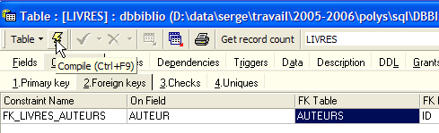
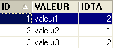

5. Beziehungen zwischen Tabellen
5.1. Fremdschlüssel
Eine relationale Datenbank ist eine Sammlung von Tabellen, die durch Beziehungen miteinander verknüpft sind. Nehmen wir ein Beispiel, das sich an der vorherigen Tabelle [BIBLIO] orientiert, deren Struktur wie folgt aussah:

Ein Beispiel für den Inhalt sah wie folgt aus:

Man möchte vielleicht Informationen über die verschiedenen Autoren dieser Werke haben, zum Beispiel deren nom und prénom sowie deren Geburtsdatum, deren nationalité. Erstellen wir eine solche Tabelle. Klicken wir mit der rechten Maustaste auf [DBBIBLIO / Tables] und wählen wir dann die Option [New Table]:

Erstellen wir nun die folgende Tabelle [AUTEURS]:
 |  |
Primärschlüssel der Tabelle – dient zur eindeutigen Identifizierung einer Zeile | |
Name des Autors | |
Vorname des Autors, falls vorhanden | |
sein Geburtsdatum | |
sein Herkunftsland |
Der Inhalt der Tabelle [AUTEURS] könnte wie folgt aussehen:

Kehren wir zur Tabelle [BIBLIO] und ihrem Inhalt zurück:
In der Spalte [AUTEUR] der Tabelle ist es nicht mehr notwendig, den Namen des Autors anzugeben. Es ist vielmehr vorzuziehen, die Nummer (ID) anzugeben, die er in der Tabelle [AUTEURS] hat. Erstellen wir also eine neue Tabelle mit dem Namen [LIVRES]. Um diese zu erstellen, verwenden wir das in Abschnitt 3.14 erstellte Skript [biblio.sql]. Wir laden dieses Skript mit dem Tool [Script Executive, Ctrl-F12]:

Wir passen das Skript zur Erstellung der Tabelle „BIBLIO“ an das Skript der Tabelle „LIVRES“ an:
Wir kommentieren nur die Änderungen:
- Zeile 4: Das Feld [AUTEUR] der Tabelle wird zu einer ganzen Zahl. Diese Nummer verweist auf einen der Autoren der zuvor erstellten Tabelle [AUTEURS].
- Zeilen 11–19: Die Namen der Autoren wurden durch ihre Autorennummern ersetzt.
- Zeile 29: Der Name der Einschränkung wurde geändert. Zuvor hieß sie [ UNQ1_BIBLIO ]. Nun heißt sie [ UNQ1_LIVRES ]. Dieser Name kann beliebig gewählt werden. Es ist jedoch ratsam, dass er eine Bedeutung hat. Hier wurde darauf nicht geachtet. Die Einschränkungen für die verschiedenen Felder und Tabellen einer Datenbank müssen durch unterschiedliche Namen voneinander unterschieden werden. Zur Erinnerung: Die Einschränkung in Zeile 29 verlangt, dass ein Titel in der Tabelle eindeutig ist.
- Zeile 36: Änderung des Namens der Einschränkung für den Primärschlüssel ID.
Führen wir dieses Skript aus. Wenn es erfolgreich ist, erhalten wir die folgende neue Tabelle [LIVRES]:
 |  |
Man kann sich fragen, ob wir unter dem Strich wirklich etwas gewonnen haben. Tatsächlich enthält die Tabelle [LIVRES] Autorennummern anstelle der Namen. Da es Tausende von Autoren gibt, scheint es schwierig zu sein, die Verbindung zwischen einem Buch und seinem Autor herzustellen. Glücklicherweise steht uns die Sprache SQL zur Hilfe. Sie ermöglicht es uns, mehrere Tabellen gleichzeitig abzufragen. Als Beispiel stellen wir die Abfrage SQL vor, mit der wir die Titel der Bücher aus der Bibliothek zusammen mit den Informationen zu ihren Autoren abrufen können. Verwenden wir den Editor SQL (F12), um den folgenden Befehl SQL auszuführen:
SQL> select LIVRES.titre, AUTEURS.nom, AUTEURS.prenom,AUTEURS.date_naissance
FROM LIVRES inner join AUTEURS on LIVRES.AUTEUR=AUTEURS.ID
ORDER BY AUTEURS.nom asc
Es ist noch zu früh, um diesen Befehl SQL zu erläutern. Wir werden in Kürze darauf zurückkommen. Das Ergebnis dieser Abfrage lautet wie folgt:

Jedes Buch wurde korrekt seinem Autor und den dazugehörigen Informationen zugeordnet.
Fassen wir zusammen, was wir gerade getan haben:
- Wir haben zwei Tabellen, die Informationen unterschiedlicher Art enthalten:
- Die Tabelle AUTEURS enthält Informationen zu den Autoren
- Die Tabelle LIVRES enthält Informationen zu den von der Bibliothek erworbenen Büchern
- Diese Tabellen sind miteinander verknüpft. Ein Buch hat zwangsläufig einen Autor. Es kann sogar mehrere Autoren haben. Dieser Fall wurde hier nicht berücksichtigt. Das Feld [AUTEUR] der Tabelle [LIVRES] verweist auf einen Datensatz der Tabelle [AUTEURS]. Dies wird als Beziehung bezeichnet.
Die Beziehung, die die Tabelle [LIVRES] mit der Tabelle [AUTEURS] verbindet, ist eigentlich eine Art Einschränkung: Ein Datensatz der Tabelle [LIVRES] muss immer eine Autorennummer enthalten, die in der Tabelle [AUTEURS] vorhanden ist. Wenn ein Datensatz in [LIVRES] eine Autorennummer hätte, die in der Tabelle [AUTEURS] nicht existiert, befänden wir uns in einer anomalen Situation, in der wir den Autor eines Buches nicht ermitteln könnten.
Die Tabelle SGBD kann überprüfen, ob diese Einschränkung stets erfüllt ist. Zu diesem Zweck fügen wir der Tabelle [LIVRES] eine Einschränkung hinzu:
 |  |  |
Die Verknüpfung zwischen dem Feld [AUTEUR] der Tabelle [LIVRES] und dem Feld [ID] der Tabelle [AUTEURS] wird als Fremdschlüsselverknüpfung bezeichnet. Das Feld [AUTEUR] der Tabelle [LIVRES] wird im obigen Assistenten als „Fremdschlüssel“ oder „foreign key“ bezeichnet. Einen Fremdschlüssel zu definieren bedeutet, dass der Wert einer Spalte [c1] einer Tabelle [T1] in der Spalte [c2] der Tabelle [T2] vorhanden sein muss. Die Spalte [c1] wird als „Fremdschlüssel“ der Tabelle T1 auf die Spalte [c2] der Tabelle [T2] bezeichnet. Die Spalte [c2] ist häufig der Primärschlüssel der Tabelle [T2], dies ist jedoch nicht zwingend erforderlich.
Wir definieren den Fremdschlüssel [AUTEUR] der Tabelle [LIVRES] auf das Feld [ID] der Tabelle [AUTEURS] wie folgt:
 |
- Name der Einschränkung: frei
- Spalte „Fremdschlüssel“, hier die Spalte [AUTEUR] der Tabelle [LIVRES]
- Tabelle, auf die der Fremdschlüssel verweist. Hier muss die Spalte [AUTEUR] der Tabelle [LIVRES] einen Wert in der Spalte [ID] der Tabelle [AUTEURS] haben. Es wird also auf die Tabelle [AUTEURS] verwiesen.
- Spalte, auf die der Fremdschlüssel verweist. Hier die Spalte [ID] der Tabelle [AUTEURS].
Wir bestätigen diese Einschränkung:

Wenn alles in Ordnung ist, wird sie akzeptiert:

Was ist die Auswirkung dieser neuen Fremdschlüssel-Einschränkung? Versuchen wir mit dem Editor SQL (F12), eine Zeile in die Tabelle LIVRES mit einer nicht vorhandenen Autorennummer einzufügen:

Die oben genannte Operation [INSERT] hat versucht, ein Buch mit einer nicht vorhandenen Autorennummer (100) einzufügen. Die Ausführung der Abfrage ist fehlgeschlagen. Die zugehörige Fehlermeldung weist darauf hin, dass die Fremdschlüsselbeschränkung „FK_LIVRES_AUTEURS“ verletzt wurde. Dies ist die Beschränkung, die wir gerade definiert haben.
5.2. Verknüpfungsoperationen zwischen zwei Tabellen
Erstellen wir – ebenfalls in der Datenbank [DBBIBLIO] (oder einer beliebigen anderen Datenbank) – zwei Testtabellen mit den Namen TA und TB, die wie folgt definiert sind:
Tabelle TA
- ID: Primärschlüssel der Tabelle TA - DATA: ein beliebiger Wert |  |
Tabelle TB
 - ID: Primärschlüssel der Tabelle TB - IDTA: Fremdschlüssel der Tabelle TB, der auf die Spalte ID der Tabelle TA verweist. Somit muss ein Wert aus der Spalte IDTA der Tabelle TA in der Spalte ID der Tabelle TA vorhanden sein - VALEUR: ein beliebiger Wert |  |
Im Editor SQL (F12) werden wir Befehle SQL ausgeben, die gleichzeitig die beiden Tabellen TA und TB nutzen.

Der Befehl SQL greift hinter dem Schlüsselwort FROM auf die beiden Tabellen TA und TB zu. Die Transaktion FROM TA, TB führt zur vorübergehenden Erstellung einer neuen Tabelle, in der jede Zeile der Tabelle TA jeder Zeile der Tabelle TB zugeordnet wird. Wenn also die Tabelle TA NA Zeilen und die Tabelle TB NB Zeilen hat, hat die resultierende Tabelle NA × NB Zeilen. Dies zeigt der obige Screenshot. Außerdem enthält jede Zeile die Spalten beider Tabellen. Die in der Anweisung [SELECT col1, col2, ... FROM ...] angegebenen Spalten coli geben an, welche Spalten beibehalten werden sollen. Hier bedeutet das Schlüsselwort *, dass alle Spalten der Ergebnistabelle angefordert werden. Manchmal wird gesagt, dass die Ergebnistabelle des vorherigen Befehls SQL das kartesische Produkt der Tabellen TA und TB ist.
Oben wurde jede Zeile der Tabelle TA jeder Zeile der Tabelle TB zugeordnet. Im Allgemeinen möchte man einer Zeile der Tabelle TA die Zeilen der Tabelle TB zuordnen, die mit ihr in Beziehung stehen. Diese Beziehung nimmt oft die Form einer Fremdschlüsselbeschränkung an. Dies ist hier der Fall. Einem Datensatz der Tabelle TA können die Datensätze der Tabelle TB zugeordnet werden, die die Beziehung TB.IDTA=TA.ID erfüllen. Es gibt mehrere Möglichkeiten, dies abzufragen:
Der vorherige Befehl SQL entspricht dem vorherigen, weist jedoch zwei Unterschiede auf:
- Die Zeilen, die sich aus dem kartesischen Produkt TA × TB ergeben, werden durch eine Klausel WHERE gefiltert, die einer Zeile der Tabelle TA nur die Zeilen der Tabelle TB zugeordnet werden, die die Beziehung TB.IDTA=TA.ID erfüllen
- werden nur bestimmte Spalten mit der Syntax [T.col] abgefragt, wobei T der Name einer Tabelle und col der Name einer Spalte dieser Tabelle ist. Diese Syntax beseitigt die Mehrdeutigkeit, die entstehen könnte, wenn zwei Tabellen Spalten mit demselben Namen hätten. Wenn diese Mehrdeutigkeit nicht besteht, kann die Syntax [col] verwendet werden, ohne die Tabelle dieser Spalte anzugeben.
Das Ergebnis lautet wie folgt:

Das gleiche Ergebnis lässt sich mit dem folgenden Befehl SQL erzielen:
Aus dem Begriff [inner join] leitet sich die Bezeichnung „innerer Join“ ab, die für diese Art von Operationen zwischen zwei Tabellen verwendet wird. Wir werden sehen, dass es auch einen „äußeren Join“ gibt. Bei einem inneren Join hat die Reihenfolge der Tabellen in der Abfrage keinen Einfluss auf das Ergebnis: FROM TA inner join TB ist gleichbedeutend mit FROM TB inner join TA.
Die vorhergehende Abfrage SQL nimmt nur die Zeilen der Tabelle TA in die Ergebnistabelle auf, auf die mindestens eine Zeile der Tabelle TB verweist. Daher erscheint die Zeile aus TA, [3, data3], nicht im Ergebnis, da sie nicht von einer Zeile aus TB referenziert wird. Möglicherweise möchte man alle Zeilen aus TA, unabhängig davon, ob sie von einer Zeile aus TB referenziert werden oder nicht. In diesem Fall verwendet man eine äußere Verknüpfung zwischen den beiden Tabellen:

Hier handelt es sich um einen linken äußeren Join („left outer join“). Um den Begriff „FROM TA left outer join TB“ zu verstehen, muss man sich eine Verknüpfung vorstellen, bei der die Tabelle TA auf der linken Seite und die Tabelle TB auf der rechten Seite steht. Alle Zeilen der linken Tabelle finden sich im Ergebnis einer linken äußeren Verknüpfung wieder, auch diejenigen, bei denen die Verknüpfungsbedingung nicht erfüllt ist. Diese Verknüpfungsbedingung ist nicht zwangsläufig eine Fremdschlüsselbeschränkung, auch wenn dies doch der häufigste Fall ist.
In der folgenden Reihenfolge:
ist die Tabelle TB die „linke“ Seite der äußeren Verknüpfung. Daher finden sich alle Zeilen von TB im Ergebnis wieder:

Im Gegensatz zur inneren Verknüpfung spielt die Reihenfolge der Tabellen also eine Rolle. Es gibt auch rechte äußere Verknüpfungen:
- FROM TA left outer join TB entspricht FROM TB right outer join TA: Die Tabelle TA befindet sich auf der linken Seite
- FROM TB mit einem linken äußeren Join zu TA entspricht FROM TA mit einem rechten äußeren Join zu TB: Die Tabelle TB befindet sich auf der linken Seite
Da wir nun die Grundlagen der gleichzeitigen Verarbeitung mehrerer Tabellen kennen, können wir uns komplexeren Abfrageoperationen in Datenbanken zuwenden.